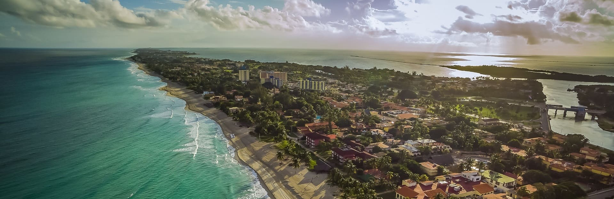

Descubre los principales lugares incluidos en nuestro mapa de sitio.
Capital cubana, famosa por su arquitectura histórica y vida cultural.

Playa de arena clara y aguas turquesas.
Destino costero de playas y paisajes naturales.
Región de paisajes, cultura y opciones de turismo de naturaleza.
Ciudad de historia, música y tradiciones cubanas.